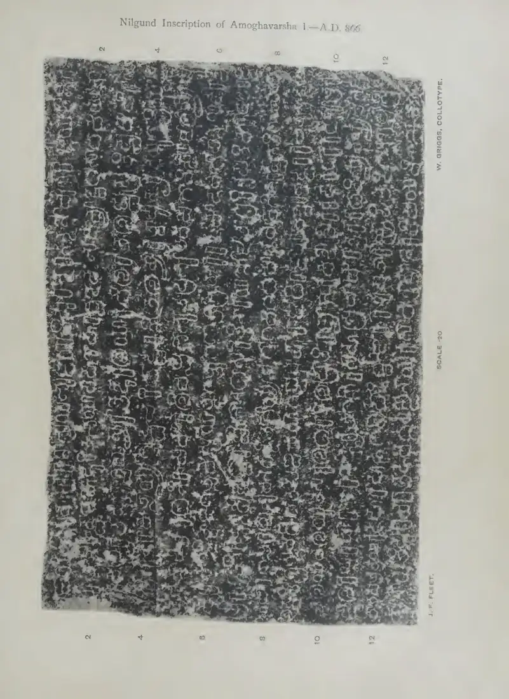

Nilgund Inscription of the Time of Amoghavarsha I.; A.D. 866
NILGUND INSCRIPTION OF THE TIME OF AMOGHAVARSHA I.;
A.D. 866.
By J. F. FLEET, I.C.S. (RETD.), PH.D., C.I.E.
This inscription is now brought to notice for the first time. And I edit it from an ink-impression obtained by me in 1887. I edit it, partly because it is interesting in itself, and partly because it is closely connected with the Sirûr inscription, of the same date, of which a version has been given by me in the Ind. Ant. Vol. XII. p. 215 ff. A revised version of the latter record will be given shortly, in the course of some papers which will illustrate the development of the alphabet of the Kanarese country during the ninth century A.D.1 And it is convenient to publish the Nîlgund record first, because, as far as the words Annigereyol=ire in line 22, it was based on the same draft on which was based the same part of the Sirûr record, and, though on the one hand parts of it could hardly have been deciphered without the help of the Sirûr record, on the other hand it supplies a few aksharas which are illegible in the Sirûr record and could not be supplied from any other source.
Nilgund is a village about twelve miles S. W. W. from Gadag, the head-quarters of the Gadag tâluka of the Dhârwâr district. It is shewn in the Indian Atlas sheet No. 41 (1852) as 'Neelgoond.' The modern form of the name is carried back to A.D. 1379 by the Đambal grant of that year, which mentions the place, in Nâgarî characters and in a Sanskrit verse, as Nilagunda.2 The present record gives its name in the older form of Nîrgunda;3 the purport of it places Nîrgunda in a circle of villages known as the Mulgunda twelve, which, again, it places in the Beľvola three-hundred district; and Mulgunda, from which the circle took its name, is, of course, the modern Mulgund, about two miles on the south-east of Nilgund. The inscription is on a stone tablet which was found standing in front of the house of Angađi-Râchappa, in the village of Nîlgund.
At the top of the stone there are sculptures, of which the principal ones are the goddess Lakshmî, squatting and facing full-front, with an elephant, on each side, standing towards her: the tips of the trunks of the elephants, which are uplifted, meet above her head, and each of them holds something which may be either a flower or a water-pot or some sacred symbol; and above them, and perhaps supported by them, there is a smaller image, representing probably Vishnu, squatting and facing full-front. Below the figure of Lakshmî, there is a svastika. On the proper right of the latter, there are a cow and a calf; and on the proper left, two objects which, in the sketch submitted to me, look like a thick-set bush and a flowering plant, each in a tub or stand.—The writing covers an area about 3' 4" broad by 5' 11" high. Lines 1 to 15 are in a state of fairly good preservation. Lines 16 to 25 have suffered a great deal of damage; and there are many syllables here, in addition to those which I have placed in square brackets, which could hardly have been deciphered with any certainty, if at all, without the help of the Sirûr inscription. Lines 26 to 35, also, are considerably damaged, but not to the same extent.—The characters are Kanarese, boldly formed and well executed. They are of a good antique square and upright style, presenting an appearance much older than that of the characters of the Sirûr inscription, of the same date, of which a collotype will be published hereafter. And the size of them ranges from about " in the ya of traya, line 12, to about 1"
1 See a remark made on page 74 above.
2 Jour. Bo. Br. R. As. Soc. Vol. XII. p. 357, text line 129.
3 The dental nd can be recognised clearly in the impression, both in Nirggundada, line 26, and in Mulgunda, line 2; and it is, of course, exactly what we should expect. The Nîlgund inscription of A. D. 982, however, for some reason or other gives the name as Nîrgunđa, with the lingual nd (above, Vol. IV. p. 206, text line 20).
in the la of Kulappayyam, line 22. Only the first part of the ink-impression, containing lines 1 to 13, is suitable for reproduction; and here the largest akshara seems to be the kâ of kânt-êndu, line 3, which is about 2" high. The record uses final forms of t in line 16, of n in lines 28 and 33, of r in line 27, and of l in lines 25 and 27 (twice). And it marks, in the usual way, the difference between the lingual d and the dental d; this can be recognised in the dâ of Gauđân, line 6, though the akshara is somewhat damaged. As regards palæography, the record, which belongs to the transitional period, favours the older rather than the later types, not only in general style, but also in details. The kh occurs twice: in likhitam, line 35, it is somewhat damaged, and it is difficult to decide whether we have there an old square kh rather loosely formed, or a later cursive kh; but in the kha of ṣamkha, line 12, No. 14, we have clearly the later cursive character. The j is damaged and undeterminable in vijaya, line 19, and râjjâbhivrîddhi, line 20; but in every other instance it is unmistakably the old square j, of the closed form, and there is no reason to infer anything else from such marks as are discernible in lines 19 and 20: in the lithograph, the intended form of the character is recognisable best in the ja of dhîrâja, line 9, No. 22. The n occurs three times, in ôttuṅga, line 13 (the last akshara but one), and Nripatuṅga, line 17, and samvatsaraṅgal, line 19-20: in each instance, it is damaged and not determinable with certainty; but such marks as are recognisable, indicate that in each case it follows the usual rule which connects it with the j, and is of the old square type, with the closed form. The b is damaged and undeterminable in baram, line 17, and bbrâhmaṇarumam, line 29; but in every other instance it is unmistakably the old square b, of the closed form, and there is no reason to infer anything else from such marks as are discernible in lines 17 and 29: the intended form of the character is recognisable best in the bdha of labdha, line 3, No. 24. The l is damaged and undeterminable in Lattalûra, line 16, Lakshmivallabhêndra, line 17, salutt-îre and kâlâtîta, line 18, salutt-îre, line 20, Kulappayyam, line 24, kâlam, line 26, and kâlê-kâlê pâlanîyô, line 34: in the li of maṇdalikarkkalâ, line 10, No. 23, and in the lâ of lâñchanam, line 16, we have the later cursive l, and so also in the upper l in vallabhô, line 5, ella, line 12, and kallam, line 35; but in every other instance we have unmistakably the old square l, and the intended form of it is illustrated very well by the la of alamkritam, line 3, No. 20; the formation of it here exhibits, though not to a very marked extent, the prolongation, with a sweep to the right, of the downstroke that makes the end of the letter, which (as will be shewn more clearly hereafter) had been the first step in the development of the later cursive type from the old square type.—As regards the language, we have Sanskrit ordinary verses in lines 1 to 8, and Sanskrit benedictive and imprecatory verses in lines 30 to 35, with, among them, a verse in praise of the god Vîshṇu which seems rather out of place there; the remainder of the record is in Kanarese, of the archaic type, in prose. The record uses two words which are not included in dictionaries; namely, in line 10, prâtirâjya, employed in the sense of pratîrâja, 'a hostile king';1 and in line 24, râjaśrâvita, for which the best translation seems to be 'a royal decree'.2 In Vâraṇśiyul, line 27, we have the locative ending ul, which, in genuine records, is of sufficiently rare occurrence, as compared with the endings oł and al, to be
1 See above, Vol. III. p. 104. I owe this reference to Prof. Kielhorn.
2 The word râja-śrâvita,— or râjâ-śrâvita, as sometimes written, and perhaps in the present record, but wrongly,— means, literally, 'caused to be heard by the king, spoken by the king.' It has been met with before, in an inscription of the period A.D. 680 to 696 at Bałagâmi, where we have râja-śrâvitam=âge, "on a royal decree being (issued)," i.e. "under or in accordance with a royal decree" (Ind. Ant. Vol. XIX. p. 145, text line 11-12), and in an inscription of the period A.D. 733 to 747 at Aihole, where we have râjâ(ja)-śrâvitam mahâjanamum naka(ga)ra-śrâvitam, "a decree by the king, a decree by the Mahâjanas and (the people of) the city" (id. Vol. VIII. p. 286, text line 4-5; it may be noted here that, at the end of line 5 of this record, the correct reading is Vâraṇśiyol, for Vâraṇśiyol).— The Ādâr inscription helps to illustrate the term, by giving us [vi] śrâvya, "having caused to be heard everywhere, having made proclamation" (Ind. Ant. Vol. XI. p. 69, text line 7-8).— We have the same erroneous lengthening of the a of râja in râjâ(ja)-rakshitam dharmma, "a religious grant protected by the king," in the Bêlâr inscription of A.D. 1021 or 1022 (id. Vol. XVIII. p. 274, text line 37).
worth noting.1— As regards orthography, the only points that present themselves are (1) the use of ri for ri in the word srishti, lines 12 and 33, though everywhere else the vowel seems to be used correctly; and (2) the occasional omission to double a consonant after r, in the second jayati, line 1, in Gūrjarāīns, line 6, in ārtham, line 25, in brahma-svam, line 31, and in nṛipāṇām, line 34.
The inscription refers itself to the reign of the Rāshṭrakūṭa king Amôghavarsha I., who was on the throne from A.D. 814 or 815 to A.D. 877 or 878. It mentions him by also the birudus of Atiśayadhavala, Lakshmivallabhendra,2 and Nṛipatuṅga. His proper name is not yet known. But, from the way in which his sovereignty is likened to the sovereignty of the god Vishṇu, and from the attribution to him, in that passage, of the biruda Lakshmivallabhendra or “chief among the husbands or favourites of Lakshmî or Fortune,” and of the epithet surāsuramardana or “subduer of gods and demons,” which would hardly be appropriate in any ordinary description of a king, it seems likely that his name either was Nārāyaṇa or Vishṇu, or else was a name beginning with the word Vishṇu. It mentions an officer of his, named Dēvaṇṇayya, who,— residing at Annigere,3 which is the modern Aṇnigere
1 The following other instances, the dates of which are known or can be fixed approximately, may usefully be put together here, from genuine records, and from others for questioning which there are no primā-facie grounds. Vāraṇaśivadul; Ind. Ant. Vol. XIX. p. 145, line 13; at Bałagāmi; of the period A.D. 680 to 696: and, in line 15 of the same record, elpattaruļaīm, in which we have the copulative or emphatic ending aīm after the uļ. Tiṅgalūl, pūrnṇamāsadul, vishupadul, gāṇadul, and Vāraṇāsiyul; Ind. Ant. Vol. VIII. p. 285, lines 2 to 5; at Aihole; A.D. 708. Ūrul and okkalul; Ep. Carn. Vol. III., My. 55; at Varuṇa; A.D. 765 to 805. Okkalul again; Ep. Carn. Vol. IV., Hg. 93; at Maṭakere; about A.D. 783. Ma(?mā)vindilaruļ and ndyakarul; Ind. Ant. Vol. X. p. 39, No. 2, lines 6, 8; at Gūlgānpode; A.D. 850 to 900, or somewhere thereabouts. Pathadul, besadul, kōteyul; Ep. Carn. Vol. III., Nj. 75; at Husukūru; A.D. 870-71. Nādinul; Ep. Carn. Vol. IV., Hg. 103; at Katṭemanuganaha||i; A.D. 870-71 to about A.D. 908. Nādul; Ep. Carn. Vol. III., Nj. 134; at Nandigunda; A.D. 1021; and further on in this record we seem to have a very exceptional locative, bađagalaļu or buđagalaļ.— We can now recognise uļle, as a development of the uļ-ending, in Maṅgaluļle, “at (the village of) Maṅgal,” in Ind. Ant. Vol. X. p. 103, line 8; at Mahākūṭa; A.D. 696 to 733-34. And we have the same ending presented in saṅghaduļle and Kalṣappinuļle, in Inscrs. at Šrav.-Bel. Nos. 31, 34; date not yet fixed.
2 See page 106 below, note 2.
3 This name occurs in line 22 of the text. In other ancient records, as far as they have come under my notice, it is always written with the lingual ṇṇ,— Aṇnigere, and the vowel is sometimes marked long,— Aṇnigere. A half-Sanskritised form, in which taṭāka is substituted for kere, occurs in a verse in a record of not long after A.D. 1176 (Inscrs. at Srav.-Bel. No. 42): the transcription gives there, also, the lingual ṇṇ; and the metre marks the vowel as short,— Aṇnitaṭāka. Whatever may be the explanation of the use of the dental nn in the present record and in the Sirūr inscription, we may take it as tolerably certain that the more correct form of the name was always that with the lingual ṇṇ. The vowel, no doubt, was liable to be used either short or long.— As regards the etymology, the first component of the name may be a proper name; or it may be a variant of aṇne (1), ‘excellence, purity,’ or of aṇne (3),= āṇi (3), which occurs in āṇikallu, ‘a hailstone,’ and (see, particularly under āli; 1) may perhaps mean ‘water, cloud, or rain;’ or it may quite possibly stand for haṇṇi, ‘the sunflower,’ which we have in the name Hanṇikeri (see further on in this note), on the analogy of ōgu for hōgu (above, Vol. V. p. 262). With the dental nn, there does not seem to be any word anni; and the words anne (1), (2), and (3), do not give any suitable meaning.— As regards the modern form, the compilation Bombay Places and Common Official Words, issued in 1878, certifies it as ‘Aṇṇigēri,’ with the lingual ṇṇ and the long i: but I feel tolerably certain that, in giving gēri,= kēri, ‘a street,’ instead of gere,= kere, ‘a tank,’ it does not even represent any correct modern custom outside official circles; for, to the best of my remembrance, the inhabitants of the town always pronounce the name as Aṇnigere. The Indian Atlas sheet No. 41 (1852) has ‘Anigeere,’ which rather suggests that the writer was thinking of giri, ‘a hill.’ The Map of the Dhārwār Collectorate (1874) has ‘Annehgere,’ which suggests that the person who then took down the name, heard, correctly, gere. The Postal Directory of the Bombay Circle (1879) has ‘Annigeri.’ And the Dhārwār volume (1884) of the Gazetteer of the Bombay Presidency uses that same form; e.g. pp. 389, 440, 650, 651.— In connection with the official certification of the modern name as ‘Aṇṇigēri,’ I may add the following remarks, which will be of use in respect of some other names also. In the Kanarese districts of the Bombay Presidency, there is a constant tendency to substitute i for the final e of nominal bases and verbal roots,— for instance, mane, ‘a house,’ will just as often, if not more frequently, be written mani, and kare, ‘to call,’ often becomes kari, for conjugational purposes; also, the old character x has passed out of use altogether; and the mark which distinguishes the long t, θ, and ó, is rarely, if ever, used in writing. The result is that a nondescript word keri is
or Annīgere, about twelve miles west of Gadag,— was governing the Beļvola three-hundred district. And it mentions also a relative of Dēvaņnayya, (probably named Kulappayya, who was governing the circle of villages known as the Mulgunda twelve. The object of it is to record an assignment of the tax on clarified butter or ghee. The assignment was made under
used to represent, indifferently, either kere (kere), 'a tank,' or kēri, 'a street;' and it is impossible to decide which it represents, as the final of a place-name, unless one can hear the name pronounced by a resident of the village itself, or can find it in an ancient record. In cases in which I have been unable to ascertain whether the real termination is kere or kēri, I have used that nondescript word keri, as a reminder to myself that the name has not been determined; and it is for that reason that I have written, for instance, Kaṭtageri, Bendīgeri, and Haņikeri (Dyn. Kan. Distrs. pp. 448, note 1, 526, 556). There is, perhaps, more trouble with the words kere and kēri than in any other detail. But no one, who has not tried it in person, can realise how difficult it is to get at the really correct and undeniable spelling of many a place-name, unless some indication is derivable from an ancient record. My experience is that, among modern publications, the older sheets of the Indian Atlas, though by no means infallible, are in many respects the best guide, in spite of the want of any definite system in them, or rather, because no attempt was made in them to aim, in vain, at any uniformity of system on lines which, at that time, had hardly become definitely fixed even among scholars. The revised sheets are not so useful a guide, because in them (as also in the Bombay Survey sheets) the spelling is adapted to the modern official system. The chief features of this system are, the use of a, á, i, and u, instead of u, a, ee, and oo, and the use of d, instead of r, for the lingual d. It would be good enough, if it were in safe hands; that is to say, under the control of someone who could determine the exact correct spelling everywhere, and could enforce the uniform use of it. But it is not in such hands. It frequently gives the long á where it ought to give the short a, and vice versd. It has a particularly weak point, in failing to make any distinction between the dental d and the lingual d, which latter usually appears as r in the older sheets of the Indian Atlas. It has produced such monstrosities as 'Kánara' and 'Kánarese,'—(supposed to be critical forms),—instead of the purely conventional but thoroughly well established words Kanara and Kanarese. And, as specific instances of the failure of this system in official hands, we may quote, from the Bombay Survey sheet No. 272 (1894), Kanvad and Kutvad, which are given there instead of Kanvád and Kutvád, and Shirti instead of Shirhatti, and, from sheet No. 239 (1887), Bagni, instead of Bágni (regarding these names, see Ind. Ant. Vol. XXIX. p. 278 and note 23, p. 276, and p. 277, note 17). The best way to determine the real name of a place, is, naturally, to make local inquiries in person. And it is, of course, the cultivators and the hereditary village-officials,—not the district officials and their clerks,—who can best furnish information as to the true names of their villages. But what they pronounce, has frequently to be written down by an ordinary clerk who takes no real interest in the matter. And that is where all the mistakes come in now, and, apparently, came in in earlier times also.—In illustration of the way in which the cultivators can help towards the identification of ancient places, we may refer to the case of Bágalkót in the Bijápur district. The cultivators call it Bángadíkóte. This name is accounted for, though the exact form of it is not absolutely justified, by the fact that the ancient name of the place was Bágađageyakóte, Bágađigeyakóte (see Ep. Ind. Vol. II. p. 170). This name, adduced by the cultivators, first put me in the way of identifying Bágađage with Bágalkót. And, in addition to the epigraphic passage which I then quoted, I may now refer to a record of A.D. 1049 at Sirúr, eight miles on the south-east of Bágalkót, which mentions Bágađagá-rájapatha, "the highway to Bágađagá."—In illustration of the way in which the cultivators preserve the real names of places, we may take the case of a village close on the east of Gadag and incorporated with that town for municipal purposes. The name of it is certified in Bombay Places as 'Beṭgēri;' and, I may add, in the Dhárwār volume of the Gazetteer it appears as 'Bettigeri' (pp. 712, 713), which illustrates very well the vagaries of official practice. But the cultivators call it Batgere. And the ancient name occurs as Baṭṭakeṇe in a record of A.D. 888. In this instance, it happens, the official mistake, of substituting kēri for kere, is carried back to A.D. 1379 by the Đamba! grant, which mentions the place as Baṭṭagēri (loc. cit. in note 2 on page 98 above, text line 125), evidently as the result of an ancient official failing to catch the name correctly; and it may be remarked that the same record also mentions as Kaujagēri, in line 126, a neighbouring village, the name of which is found in a record of A.D. 933-34 as Kovujagere, or possibly Kovujamgere.—I would make, here, a correction in the name of a village in the Karajgi tāluka, at which some early Kadamba copper-plate grants were obtained (see Ind. Ant. Vol. VII. p. 33 ff.). The name of it figures in the Indian Atlas sheet No. 42 (1827) as 'Dewgeeree,' and in the Map of the Dhárwār Collectorate (1874) as 'Deogeree,' and in the Postal Directory (1879) as 'Deogiri,' and in the Dhárwār volume (1884) of the Gazetteer as 'Devgiri' (p. 665). I was told that the cultivators call the place Dēvagere and Dēogere. But I was assured that that is a mistake, and that the real name is Dēvagiri. And I, therefore, gave the name as Dēvagiri in editing the grants in question, and elsewhere (e.g. above, Vol. V. p. 173). Subsequently, I was led to believe that the real name is Dēvagere; and I have used that form in, for instance, Dyn. Kan. Distrs. p. 287. But I have since then found, from records of the twelfth and thirteenth centuries at the place itself, that the ancient name was Dēvamgēri,—sometimes perhaps written Dēvagēri, without the anusvāra in the second syllable. I also notice that the Native gentleman, to whom I was indebted in the first instance for impressions of them, wrote the name, on the first of the impressions, as Dēvagiri in English characters (according to official custom),
the authority of a rđjaśrávitu or royal decree1 of Amôghavarsha I. And it was made to the hundred-and-twenty Mahájanas of Nírgunda,— doubtless in order to make the proceeds of the tax available for expenditure by them on communal purposes, instead of being credited to the royal revenues.2
The passages containing the details of the date are partly illegible. But enough can be deciphered to shew that the date of this record is the same as the date of the Sirúr record. The full details, then, are an eclipse of the sun on the new-moon day of the month Jyaishtha of the Vyaya samvatsara, Śaka-Samvat 788, in the fifty-second year of the reign of Amôghavarsha I. And the corresponding English date is Sunday, 16th June, A.D. 866, when there was a total eclipse of the sun, visible in India, at 9 h. 4 min. after mean sunrise.3
TEXT.4
- 1 Ôm5 [||*] Jaya[t]i6 bhuvana-káraṇaṅ Svayamibhur=jayati Purandara-nandanô Murârih jayati Giri-
- 2 [s]utâ-niruddha-dêhô durita-bhay-âpaharô Haras=cha dêvah [||*] Śa7 vô=vyâd=Vêdhasâ dhâma yan-nâ-
- 3 [bhi]-kamala[m] kritaṅ Haras=cha yasya kânt-êndu-kalayâ kam=alamkritaṅ [||*] Labdha8-pratishtham=achirâya
- 4 [Ka]li[m] su-dûrâ(ra)m=utsâryya śuddha-charitô(tai)r=ddharaṇî-talasya kritvâ punaḥ Kritayuga-śrî(śri)yam=a-
- 5 [p]y=as[ê]shâṅ chitraṅ kathaṅ Nirupamaḥ Kalivallabhô=bhût [||*] Prabhûtavarshô9 Gôvinda-râjâ(jaḥ)10 śauryyêshu
- 6 vikramaḥ11 jitvâ jagat=samastaṅ yat=Jagattunga iti12 śrṛtaḥ [||*] Kêrala-13 Mâlava-Gauđân14=sa-15Gûrjarâ[m]ś=Chi-
but as Dêvagêrî in the Môdî or current Marâthî characters. And I entertain no doubt that what the cultivators really call it, is, not Dêvagere (as reported to me), but Dêvagêri, and that this is the form that ought to be used for the future.
Represented by a plain symbol; and so also in lines 9 and 30.
1 See page 99 above, and note 2.
2 See note 4 on page 107 below.
3 See Prof. Kielhorn's result in Ind. Ant. Vol. XXIII. p. 123, No. 59, and Von Oppolzer's Canon der Finsternisse, p. 198, No. 4939, and Plate 99.— The week-day is specified in the Sirúr record, but not here.— The Śaka year 788 has to be taken as the expired year: for, as pointed out by Prof. Kielhorn, by the mean-sign system the Vyaya samvatsara lasted from the 23rd September, A.D. 865 (in Ś.-S. 788 current) to the 19th September, A.D. 866 (in Ś.-S. 788 expired), and by the southern lunar-solar system Vyaya was Ś.-S. 789 current (788 expired), = A.D. 866-67,— (as also by the northern system of the same kind).
4 From the ink-impression.
6 Metre, Pushpitâgrâ.
7 Metre, Ślôka (Anushṭubh).
8 Metre, Vasantatilaka.
9 Metre, Ślôka (Anushṭubh).
10 The Sirúr inscription, line 3, has precisely the same reading, Prabhûtavarshô Gôvinda-râjâ. The run of the metre would have been better suited by Prabhûtavarsha-Gôvindô râjâ.
11 Sirúr, line 3, has the same, śauryyêshu vikramaḥ; but the é of the ryyê was omitted at first and then was added by way of correction. It would be difficult to make any sense of śauryy-êshu-vikramaḥ 'having heroism-arrow-prowess;' and it can hardly be thought that śauryyêshu Vikramaḥ, "a véry Vikrama in deeds of heroism," was intended. I can only suggest that the words are a mistake for śauryyêṇa vikramaiḥ, or else that the text is altogether corrupt here.
12 Read yaj=Jagattunga, which, however, in view of the past participle jitvâ, must probably be treated as a mistake for yó Jagattunga. In Sirúr, line 4, the pronoun was omitted altogether and the reading is [sama]st[aṅ] Jagat[t*]uṅga.
13 Metre; the first two pádas are Āryâgiti, and the last two are Āryâ: or, we may say, the verse is an Āryâgiti, in the last páda of which the metre of an Āryâ has been followed. There is a mixture of metres again in the next verse.
14 Sirúr, line 4, has Śauṭán. In each record, the reading is quite distinct.
15 Sirúr, line 4, has Gujjarâ: it gives the short u, according to the undoubtedly more correct spelling of the name in the second syllable, it omits the r; and,— as the writer seems to have intended Gurjjardn without saṅdhi with the following word,—it omits a final n.
Plate 1 is bound after this page.
7 trakúta-giridu[r]gga-sthán=ba[d*]dhvâ Kāñch-íśán=atha sa Kirttináráyanô
játah1 [||*] Ari2-nripati-makuta-ghatti-
8 ta-charanas=sakala-bhuvana-vandita-śauryyah Vaṅg-Āṅga-Magadha-Málava-Veṅg-
íśê(śai)r=archchitô=Tiśayadhava[lah] [||*]
9 Ôm Svasti Śrí3 Samadhigatapañchamahâśabda-mahârâjâdhirâja-paramêsvara-bhattâraka
chatur-udadhi-
10 valaya-valayu(yi)ta4-sakala-dharâtala-prâtirâjy5-ânêka-maṇḍalikarkkalâ kaṭaka-kaṭi-
sútra-ku-
11 nṇḍala-kéyûra-hârâ[bha]raṇ-âlainkrita-gaṇika-sâhasra6-châmar-ândhakâr- â d h ô - d i r y y a -
viryyamâna7-śvi(śvê)-
12 t-âtapatra-traya-kalaha-kâhala8-śamkha-pâlidhvaj-ôru9kôtu-patâk-âchchhâdita- d i g a n t a r -
ella sri(śri)shṭi-
13 sênâpati puravara-talavargga-daṇḍanâyaka-sâmant-âdy-ânêka10-vishay a - v i n â m [n]-11
ôttu[ñ]ga-[ki]-
14 rîta-makuta-ghrìshṭa-pâdâravinda-yugma nirjjita-v[ai]ri ripu-nivaha-Kâla-daṇḍa dushṭa-
mada-bha[m]janan12=a-
15 môgha-Râmam para-chakra-pañchânanam sur-âsura-marddanam vairi-bhaya-[ka]ram
badd[e]-ma[nô]haram a[bh]imâna-
16 man[d]iram Raṭta-vamś-ôdbhava[m] Garuḍa-lâñcha(ñchha)nam13 ṭiv[i]li-
paṛeghôshaṇa[m] Lattalûra-p]u[ra]-paramêsvara[m] śrímut
1 Sirûr, line 5, has jigati, which was then corrected into jagati.
2 Metre; the first two pádas are Āryâ, and the last two are Udgîti; or we may say, the verse is an Āryâ, in the last páda of which the metre of an Udgîti has been followed.
8 Sirûr, line 6, omits the Ôm and the Srt.
4 Sirûr, line 7, also has yuta.— Prof. Kielhorn has given me, from the Daśakumâracharita, the quotation ratnâkara-vêlâ-mêkhalâ-valayita-dharanî, which suggests that the original source of the draft used in this record had chatur-udadhi-vêlâ-valayita, etc. Compare, in some respects, lines 1, 2 of the Bêgûr record (page 48 above).
5 Sirûr, line 8, also has prâtirâjy.
6 Read gaṇikâ-sahasra.
7 Sirûr, line 9, has ândhakâra-vâdiyya-vîyya-mâna. The words virya, 'bravery, or heroism,' and mâna, 'pride,' seem altogether inappropriate in this passage. And I can only suggest that the intended reading was ândhakâra-dêdtpyamâna, or else that there may have been meant dôdhâyamâna, "being waved to and fro like fans," which we have in line 47 of the Kaṭaba grant (above, Vol. IV. p. 342), applied, however, to chauris, not to white umbrellas.
8 Sirûr, line 9, omits this word, kâhala.
9 The reading is quite distinct here. And it can be recognised, now, that in Sirûr, line 7, the writer or engraver first formed, instead of ru, the k of kêtu, and then, before attaching the ê, corrected the k into r, and then added the u. This disposes of the ôkakêtu, the "banner of a bird, or bird-ensign," which I thought was indicated by the Sirûr inscription.
10 Sirûr, line 10, has the same reading, âdy-ânêka. In each record, the reading is quite distinct. Âdy-anêka would be more in accordance with custom. But the use of âdya instead of âdi in such a combination, though somewhat unusual, is hardly to be treated as a mistake.
11 In Sirûr, line 10-11, the reading is very clear,— vishaya-vinâmn-ôttuṅga, except that the vi of vinâmn is rather intermediate between vi and dhi. And the reading is equally certain here, though the subscript n of vinâmn is a good deal damaged. We might accept vinâmna as a mistake for the usual Sanskrit word vinamra, 'bent down,' etc., or for a word vinamna which might be justified by the use of namna by Kanarese authors as an equivalent of namra, 'bowing, bent,' etc. (see Kittel's Kannaḍa-English Dictionary, under namna and namni-krita; and I think that I have met with either namna, nâmna, vinamna, or vinâmna in Kanarese records, though I cannot at present find the passages). But, as has been pointed out to me by Prof. Kielhorn, no such word would give any suitable meaning here, and what is needed after âdy-ânêka is some expression meaning 'chief or ruler of a district.' I am inclined to think, therefore, that what was really intended was vishay-âdhinâth-ôttuṅga.
12 From this point, the present record,— and the Sirûr inscription also,— pays more attention to the case-endings of the nominatives in a, which are disregarded altogether in the preceding part of this passage. Sirûr, line 11-12, has here a reading which indicates that there was intended there bhañjanan ambôgha, without sañdhi.
13 Sirûr, line 13, has the same mistake, ñcha for ñchha.
17 Amôghavarsha1-Nṛipatu[ñ]ga-nâm-â[m]kita-[La]kshmîva[lla]bhêndra2 chandr-âditya-kâlam-[baram]3 [ma]hâ-Vishu[u]va râjyam-bol=uttar-ôttaram4
18 râjy-âbhi[vṛi]ddhi sa[l]utt-ire Śaka-nṛipa-kâ[l-â]tita-samvatsara-śata[m]gal=êl-n[ûr-enbhatt-enṭa]5neya Vyaya-[samva]tsara[m] pra-
19 [va]rttise [śri]ma[d-A]môghava[rsha]-Nṛi[pa]tu[m]ga-[nâm-âmkitanâ vijaya-râ]jya-pravarddhamâna-samvatsa[ra]-
20 [ñ]gal=ayva[tt-eraḍum=uttar-ô]6ttaram [râjy-âbhi vṛiddhi7 sal]u [tt-i]re A[ti]śa[yadha]vala-narê[n]d[ra]-dê[va]8-prasâda[dind=A]-
21 môgha[varsha]-dêva-p[â]dapa[m]kaja-[bhra]mara[m] viśishṭa-ja[n-âśra ya n=a] p p a śrîmad-Dêvaṇṇayyam Beļvo[la]-
22 mûnûṛuman=âl]uttum Anni9geṛeyoļ=ire â[ta]na ma[y]du[nam] Kulappayya[m]10 Mulĝunda-pa-
23 nneraḍuman=âl]utt-ire ta[d-a]ntarggata11-Jyêshṭa12-mâsada kṛish[n]a-pakshad=amâseyu[m]13 sûryya-graha-
24 ṇamum=âgi14 Ku[lappa]yya[m]-binnapa[m]-g[e]yye Dêvaṇṇayya[m] Amôgha-varshadêvaroļ râja(pĵ)-śrâ-
25 vitam-mâđi tad-anuma[ta]dind=irvvorum mâtâ[pi]tri . . . . .15m-â[r]tham [p]unyam=âg[iy=â] grahaṇado[!]-
26 Nirggundada nûx-irppadimbarum mahâjanada kâ[la]m kaļchi tuppa-deṛeya[m] sa-bhôga-sâda(dha)-
27 kam-âgi biṭto[r] [||*] î dharmmama[m] k]âdom Vâraṇâsiyu! sûryya-grahaṇado! sâsira kavile-
28 yam vêda-vidarkkal=appa brâhmaṇarkka!ge koṭta punya-phalaman=a(?e)yduvon idan=aļid-unṭ-[â]vam
29 sâsira kavileyum16 sâsi[r]vvar=[bbr]âhmaṇarumam Vâraṇâ[s]iyuman=aļida pañcha-mahâpâka-
1 Read śrîmad-Amôghavarsha. Sirûr, line 13, omits the Amôghavarsha here, and has śri-Nṛipatuṅga.
2 Sirûr, line 14, has the same reading, vallabhêndra. But the construction requires the genitive, vallabhêndrana or vallabhêndranâ.
3 Sirûr, line 14, has chandr-âdityara kâlam-varegam. In the present record, there are only two aksharas after kâlam, both much damaged. The first of them seems to be ba, rather than va. The second of them may be ram, in which case baram was written, quite correctly; or it may be gam in which case bagam was written by mistake for baregam.
4 Sirûr, line 14, divides the words, and has râjyam-bol uttar-ôttaram.
5 The aksharas given here in square brackets are supplied entirely from Sirûr, line 15. But there is no doubt about the correctness of them, as the name of the samvatsara is quite recognisable, and so also are the other details in line 23.
6 The preceding note applies here also.
7 Sirûr, line 17, gives râjy-âbhivṛiddhi; and the same seems to have been the reading here also. But we require in this place the instrumental râjy-âbhivṛiddhiyim. The nominative seems to have been carelessly repeated from line 18 above, where it is quite correct.
8 Sirûr, line 17, omits the dêva.
9 Sirûr, line 19, makes saṅdhi, and has âl]uttum=Anni. As regards the nnî, which is quite distinct here as well as in the Sirûr inscription, but is probably a mistake for ṇṇi, see page 100 above, note 3.
10 Both here, and in line 24, there seems to be the vowel u attached to the k. But the name may perhaps be Kalappayya, or even Kâlappayya.
11 Read tad-varsh-ântarggata.
12 Read Jyêshṭha; or, more correctly, Jyaishṭha.
13 Sirûr, line 19, has amaseyum, with the short a in the second syllable. Either form is admissible. The week-day, which is specified in the Sirûr inscription, is omitted here.
14 Sirûr, line 19, has the infinitive form áge, instead of the past participle which we have here.
15 Three aksharas are quite illegible in the ink-impression here. We should expect something like śrêyô-dharm-ârtham, puny-âpyâyan-ârtham, puny-âbhivṛiddhy-artham, etc.; but none of these expressions adapts itself to such traces as are discernible.
16 Read kavṣileyumam, since we have brâhmaṇarumam instead of brâhmaṇarum.
30 takan1=akkuñ Ôm [||*] Vyâsa-vâkyañ [*] Sva2-da[ttâñ] para-dattâ[ñ] vâ
yò harêti3 vasundharâñ shashtîñ varsha-sahasrâ-
31 ñi vishthâyâñ j[â]yatê krîmih[*] [Dê]va-s[v]añ visham=ity=[â]hur=brahma-
svañ visham=[u]chyatê visham=êk[â]kinañ hanti bra-
32 hma-sva[ñ] putra-pautrika[ñ] [||*] Brahma-svañ praṇayâd=bhuktvâ dahaty=
â-saptamañ kulañ v[i]kramêṇa [yê] bhòjjyantê4 daśa pû-
33 rvvân=das=âvarân [||*] Jayati [s]thiti-sa[ñ]hâra-sri(sri)shtîkâra[ṇa]-kâraṇa[ñ]
Harir=dditija-kânt-âsya-kusê[śaya]-himâgama[h] [||*]
34 Sâmânyô5=yañ dharmma-s[êt]ur=nṇripâ[ṇâm] kâlê]-kâ[lê] pâlanî]yò bhavadbhih
sarvvân=êtân=bhâvinah pârtthivêndrân=[bhûyô]-
35 bhûyò yâchatê Râmabha[drah] [||*] . . . . . 6 bhaṭtara
likhitañ î kallañ Nâgamuḍḍa(?)na(?) . . . . . 7 [||*]
TRANSLATION.
Ôm !— (Verse 1; line 1). Victorious is Svayambhu (Brahman), the cause of the world; victorious is Murâri (Vishṇu), the son of Puraindara (Indra);8 and victorious is the god Hara (Śiva), whose body is imprisoned by (the embraces of) (Pârvatî) the daughter of the mountain (Himâlaya), and who removes sin and fear!— (V. 2; l. 2). May he (Vishṇu) protect you, the water-lily (growing) in whose navel is made a habitation by Vêdhas (Brahman); and Hara, whose head is adorned by a lovely digit of the moon!
(V. 3; l. 3). Since, with his pure actions, he in no long time drove far away from the surface of the earth Kali who had secured a footing there, and made again complete even the splendour of the Krîta age, it is wonderful how Nirupama-(Dhruva) became (also known as) Kalivallabha.9
(V. 4; l. 5). (There was his son)10 Prabhûtavarsha-Gôvindarâja (III.), who, having conquered the whole world by his heroism and deeds of prowess (?),11 was known as Jagattuṅga.— (V. 5; l. 6). Having fettered the people of Kêraḥa and Mâlava and Gauḍa, and, together
1 Read pâtakan. The ta stands in the margin, before the ka. There are some indications that an attempt was first made to supply the ta below the pâ of the preceding line.
2 Metre, Ślôka (Anushṭubh); and in the next three verses.
3 Read harêt=tu; or harati.
4 Read bhôkshyantê; or bhuñjatê.
5 Metre, Śâlinî.
6 Eight or nine aksharas are illegible here.
7 Four or five aksharas are illegible here.
8 The reading Purandara-nandanô is quite clear and unmistakable in the present record, and in line 1 of an inscription of A.D. 897-98 at Chiñchli in the Gadng tâluka, and evidently in also the impressions of an inscription at Kâlañjar, referred to “about the eighth century,” from which the verse has already been brought to notice by Prof. Kielhorn (above, Vol. V. p. 210, note 3). And it seems impossible to translate the word otherwise than by “son of Puraindara.” But, Vishṇu was one of the svayañbhu or self-existing gods; the later mythology represents him as the younger brother of Indra; and, as yet, we know of no other statement that would make him a son of Indra, and we know the expression “son of Indra” only as an epithet of the monkey-king Vâlin, of Arjuna, and of Jayanta.
9 This verse is met with, earlier, in lines 13, 14 of the Waṇî grant of A.D. 807 (Ind. Ant. Vol. XI. p. 157), in the description of Dhôra, i.e. Dhruva; and we know from that record that Nirupama and Kalivallabha were birudas of Dhruva. The primd-facie meaning of the biruda Kalivallabha would be “favourite of Kali,”— Kali being the personification of the present age. But the verse points out that it would be curious that an enemy of Kali should be called the favourite of Kali. And, either the biruda means “the favourite of brave men,” or else, as has been suggested to me by Dr. Hultzsch, we must explain it by taking kali in its meaning of ‘dissension, war, battle,’ in which case we may render the appellation by “fond of war.”
10 In this and the following two verses, there are no verbs except past participles. I supply, in such terms as seem appropriate, that which appears necessary to complete the construction. It seems likely that these three verses are detached excerpts from some longer composition, which has not yet come to notice in the records of the dynasty; just as the preceding verse about Nirupama-Kalivallabha is an excerpt from the full description of Dhruva given in the Waṇî grant (see the preceding note).
11 See page 102 above, note 11.
with the Gūrjaras, those who dwell in the hill-fort of Chitrakūta, and then the lords of Kāñchi, he became (known as) Kīrtinārāyaṇa.1
(V. 6; l. 7). (And then there came his son) Atiśayadhavala-(Amôghavarsha I.), whose feet are rubbed by the diadems of hostile kings (bowing down before him), and whose heroism is praised throughout the whole world, and who is worshipped by the lords of Vaṅga, Aṅga, Magadha, Málava, and Vengī.
(Line 9)—Ôm! Hail! Fortune! While, to an extent ever greater and greater, the increase of the sovereignty of him, Lakshmīvallabhēndra,2 who is distinguished by the name of the glorious Amôghavarsha-Nṛpiatunga,— the Mahārājádhirāja and Paramésvara and Bhaṭtāraka who has attained the pañchamaháśabda;3 he who has covered all the territories of the numerous chieftains4 of the hostile kings, over the whole surface of the earth which is girdled by the belt of the four oceans, with his thousands of courtesans decorated with waistbands and belts round their hips and ear-rings and armlets and necklaces, and with the darkness (caused by the multitude) of his chauris, and with his very brightly shining (?) three white umbrellas, and with his battle-horns and conches, and with his broad standard of the pálidhvaja-banner and his (other) flags; he who is a born leader of armies; he whose feet, resembling water-lilies, are rubbed by the lofty tiaras and diadems (bowed down before him) of Daṇdanáyakas (in charge) of capitals and groups of places,5 and of chieftains and other lords of districts (?); he who has conquered his foes; he who is a very staff of Death to the host of his enemies; he who breaks down the pride of wicked people; he who is a very unfailing Ráma; he who is a very lion to the army of his enemies; he who subdues gods and demons; he who causes fear to his foes; he who captivates the minds of truthful women;6 he who is the habitation of haughtiness; he who has been born in the race of the Raṭtas; he who has the Garuḍa-crest; he who is heralded in public with the sounds of the musical instrument called tīvili; (he who has the hereditary title of) supreme lord of the town of Lattalūra,— was continuing, like the sovereignty of the great Vishṇu, so as to endure as long as the moon and sun might last:—
(L. 18)— While the Vyaya sainvatsara, the seven [hundred and eighty-eighth] of the centuries of years elapsed of the era of the Śaka kings, was current; and while the
1 I.e. “a very Nārāyaṇa (Vishṇu) in fame.” A verse in the description of Góvinda III. in the Baroda grant of A.D. 811 or 812 presents this biruda in the form of Kīrtipurusha (Ind. Ant. Vol. XII. p. 159, text line 24). I then translated it by “the personification of fame.” But there is no real authority for that. And, on the other hand, Purusha was Vishṇu, who, again, was Nārāyaṇa; and the composer of that verse evidently used Kīrtipurusha instead of Kīrtinārāyaṇa, simply to suit his convenience in framing his lines.— The Sirūr version of the verse has, instead of játah, jigati, which was then corrected into jagati,— “he (became known as) Kīrtinārāyaṇa on the earth.” The Chiñchli inscription of A.D. 897-98 (mentioned in note 8 on page 105 above), however, presents clearly játah, again. And játa, which means ordinarily ‘born,’ seems to be used here in the meaning of ‘happened, become, present, apparent, manifest.’
2 We might take this as simply an epithet, and translate it by “the chief among the husbands or favourites of Lakshmī or Fortune.” But various analogies justify us in finding in this word a formal vallabha-appellation of Amôghavarsha I., which in its simplest form would be Lakshmīvallabha.
3 The present passage is one of a limited number in which this epithet is applied to paramount sovereigns. Two other instances have been given by me in Gupta Inscriptions, p. 296, note 9; and a few others will be adduced on some more convenient occasion.
4 The genitive maṇdalikarkaṭā seems to be governed by digantar-ella, the last member of the following compound, rather than by any of the preceding members of it.
5 From talavarga, which we have here and in Sirūr, line 10, we have Talavargin, which occurs as an official title in Vol. IV. above, p. 258, text line 14.
6 Kittel’s Dictionary gives badde, ‘a truthful woman,’ and indicates that it is a feminine form of badda, ‘firm, true,’ which is a tadbhava-corruption of the Sanskrit baddha. The whole word badde-manôhara,— half Kanarese, half Sanskrit,— is a viruddha-samḍsa (more popularly known as an arisamḍsa), “an incongruous or improper compound, a compound of heterogeneous words or words dissimilar in kind,” which, according to the Śabdamaṇidarpaṇa, sūtra 174, is allowed only when sanctioned by poets of old, as, for instance, especially in birudas.
fifty-[second] of the augmenting years of the victorious reign of him who is distinguished by the name of the glorious Amôghavarsha-Nripatunga was continuing (with) an increase of sovereignty to an extent ever greater and greater:—
(L. 20)— While, by the favour of his majesty the king Atišayadhavala, the illustrious Dêvaṇnayya, a very bee on the water-lilies that are the feet of Amôghavarshadêva and a very asylum for excellent people, was dwelling at Annigere,1 governing the Beľvola three-hundred ; and while his [brother-in-law]2 Kulappayya was governing the Muļgunda twelve:—
(L. 23)— When it was the new-moon day of the dark fortnight of the month Jyêshtha in that [year*], and when there was an eclipse of the sun,— on Kulappayya making a request, Dêvaṇnayya obtained a royal decree from Amôghavarshadêva,3 and, with his (Amôghavarsha's) approval, the two of them, for the . . . . of their parents, in a meritorious manner, at the time of that eclipse, laved the feet of the hundred-and-twenty Mahájanas of Nirgunda, and relinquished4 (to them) the tax on clarified butter, with a conveyance of the usufruct of it.
(L. 27)— He who protects this act of religion shall attain the reward of the merit of giving at Vâraṇâsi, at the time of an eclipse of the sun, a thousand tawny-coloured cows to Brâhmans who know the Vêdas ; whosoever destroys this, shall incur the guilt of the five great sins of destroying a thousand tawny-coloured cows and a thousand Brâhmans and Vâraṇâsi !6 Ôm! And there is the saying of Vyâsa:— (V. 7; l. 30). He who confiscates land that has been given, whether by himself or by another, is born as a worm in ordure for the duration of sixty
1 Regarding the second syllable of this name, as written here, see page 100 above, note 3.
2 The meanings given to mayduna in Kittel's Dictionary, which seem to mark clearly the relationship that is ordinarily intended, are 'a sister's husband, a husband's brother, a wife's brother ;' and other meanings are 'a connection, friend, or husband,' and 'a brother's son in his relation to a sister's son.' Reeve and Sanderson's Dictionary gives (under maiduna, which is the same word) 'the son of a mother's brother, or of a father's sister, or a man's brother-in-law, if younger than one's self ;' and on this authority I have, I think, sometimes translated it by 'cousin.'
3 Lit., "Dêvaṇnayya having made a râjaśrâvita on Amôghavarshadêva." For râjaśrâvita, 'a royal decree,' see page 99 above, note 2.
4 Biđu means 'to let loose, to quit hold, to let go, to leave, to abandon, to give up,' etc., etc. We might perhaps understand it to mean here that the tax in question was abolished. But the verb is often used, in the ancient records, in the place of kođu, 'to give ;' that is to say, in the sense of 'to relinquish, to assign ;' see, for instance, Vol. IV. above, p. 65, text line 23, and p. 353, lines 21, 34, and Vol. V. p. 25, lines 25, 26, 28, and Ind. Ant. Vol. XI. p. 127, line 12, and Vol. XII. p. 225, line 19, p. 256, line 18, and p. 271, line 17-18 ; and the causal bidisu occurs in the sense of 'causing to relinquish, assign, or allot,' in Ind. Ant. Vol. XII. p. 225, line 10. The expression sa-bhóga-sádhakam-ági, "in a manner accomplishing or effecting the enjoyment, with a conveyance of the usufruct," seems to shew clearly that it must be taken in that sense here. And there are three other references to the same matter, of the same period, one of which distinctly specifies a grant of the tax in question. The Sirûr inscription, of precisely the same date (see page 98 above), records that Dêvaṇnayya, while governing the Beľvola three-hundred, laved the feet of the two-hundred Mahájanas of Śrivūra and relinquished (to them) (bitĵtom) the tuppadere. An inscription at Soratūr, dated, without full details, in the same year, the Vyaya samvatsara, Šaka-Samvat 788 (expired), = A.D. 866-67, records that, while he was governing the Purigere nád, the Mahásámanta Kuppeyarasa "graciously abandoned (uļidon) the tuppadere to the fifty (Mahájanas) of Šaratavura." And an inscription at Gāwarawād, dated in Š-S. 791 (expired), in A.D. 869, records that, while he was still governing the Beľvola three-hundred, Dêvaṇnayya, under a royal decree (râjaśrâvita), "laved the feet of the Mahájanas and . . . of Gavadivāda, and gave (to them) (dānain-gotĵta) the tuppada tere, to continue as long as the moon and sun should last." — It seems probable, now, that biđu should be taken in the same sense of 'assigning' in line 6 of the Baļagāmi inscription of the time of Vinayāditya and the Sēndraka prince Pogilli (Ind. Ant. Vol. XIX. p. 144). And the purport of that record, accordingly, will be that Kāndarba, under a royal decree, conferred a favour on the specified establishments, etc., by assigning to them the specified fees and duties.
5 One might, perhaps, rather expect "at Vâraṇâsi." But plenty of other cases might be quoted, in which the accusative is used just as it is here. We may quote, in particular, lines 13, 14 of the Dođdahunđi inscription (page 44 above), where the destruction of only Vâraṇâsi is mentioned.
thousand years!—(V. 8; l. 31). They say that the property of a god is poison;1 and the property of a Brâhmaṇ is said to be poison: but poison kills only one person; whereas the property of a Brâhmaṇ kills one's sons and grandsons!—(V. 9; l. 32). If a man enjoys the property of a Brâhmaṇ through (breach of) trust, he burns his family to the seventh generation; and those who enjoy it by force (burn) ten ancestors and ten descendants!—(V. 10; l. 33). Victorious is the god Hari (Vishnu),2 the cause of continuance and destruction and creation, who is a very winter to the water-lilies that are the faces of the wives of the demons!3—(V. 11; l. 34). “This general bridge of religion of kings should at all times be preserved by you;” thus does Râmabhadra make his earnest request to all future princes!
(L. 35)—Written by . . . . bhatṭa. Nâgamuḍḍa (?) [set up] this stone.
1 With the first, second, and fourth clauses, supply “if confiscated, or misappropriated.”
2 This verse seems rather out of place in the middle of the benedictive and imprecatory verses.
3 Compare the expression in the Tuśâm inscription, which describes Vishnu as “a very frost to (cause the withering of) the beauty of the water-lilies which are the faces of the women of the demons” (Gupta Inscriptions, p. 270).
